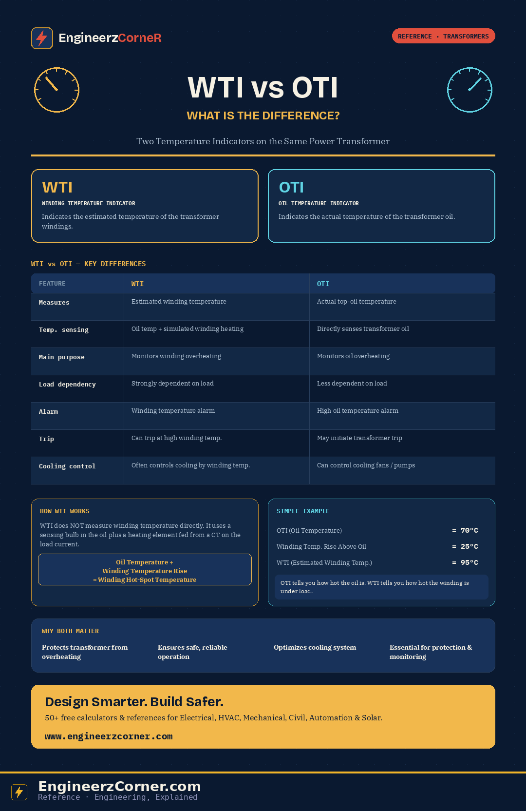

WTI and OTI sit on the same transformer, both reading out in °C on a dial gauge, and it's easy to assume they're just two views of the same number. They're not. One is a direct measurement; the other is a calculated approximation built specifically to track what a direct sensor can't reach — the temperature inside the winding insulation itself.

WTI vs OTI — what each measures, how they differ, and how WTI's estimate is built.
1. WTI — Winding Temperature Indicator
Indicates the estimated temperature of the transformer windings. It doesn't have a sensor sitting inside the winding insulation — that's not physically practical at operating voltage — so it approximates the hot-spot instead, by combining the actual oil temperature with a simulated temperature rise driven by load current.
2. OTI — Oil Temperature Indicator
Indicates the actual temperature of the transformer oil, sensed directly by a bulb at the top of the tank, where the hottest oil collects. Straightforward, no simulation involved — which is exactly why it can't tell you what's happening inside the winding under load.
WTI vs OTI — key differences
| Feature | WTI | OTI |
|---|---|---|
| Measures | Estimated winding temperature | Actual top-oil temperature |
| Temperature sensing | Oil temperature + simulated winding heating | Directly senses transformer oil |
| Main purpose | Monitors winding overheating | Monitors oil overheating |
| Load dependency | Strongly dependent on load | Less dependent on load |
| Alarm | Provides winding temperature alarm | Provides high oil temperature alarm |
| Trip | Can initiate trip at higher winding temperature | May initiate transformer trip |
| Cooling control | Often used for cooling control based on winding temperature | Can control cooling fans / pumps |
How WTI works
WTI does not measure the winding temperature directly. It uses a sensing bulb immersed in the oil, plus a small heating element wrapped around it and supplied from a current transformer (CT) on the winding circuit. The heating element's temperature rise is scaled to track how the winding would be heating up under the same load — so the gauge reading is the oil temperature plus that simulated rise:
Simple example
| Quantity | Value |
|---|---|
| OTI (oil temperature) | 70°C |
| Winding temperature rise above oil | 25°C |
| WTI (estimated winding temperature) | 95°C |
So OTI tells you how hot the oil is, while WTI gives an indication of how hot the winding is under load.
Why both matter
- ✓Protects the transformer from overheating — helps prevent insulation damage and extends service life.
- ✓Ensures safe, reliable operation — provides early warning for abnormal thermal conditions before they become failures.
- ✓Optimizes the cooling system — helps automatically control cooling fans and pumps based on real thermal load.
- ✓Essential for protection & monitoring — both feed alarms, trips, and SCADA, not just the local dial.
In short
OTI = Oil Temperature (measured). WTI = Winding Temperature (estimated). WTI is especially important for transformer overload and winding protection, because it's the one indicator that actually reflects what load is doing to the winding — not just the tank.
Applicable references
| Standard | Covers |
|---|---|
| IEC 60076-2 | Power transformers — temperature rise for liquid-immersed transformers |
| IEC 60076-7 | Loading guide for oil-immersed power transformers |
| IEEE C57.91 | Guide for loading mineral-oil-immersed transformers and step-voltage regulators |
| IEC 60947 / manufacturer datasheet | WTI/OTI gauge construction, contacts and alarm/trip setpoints (device-specific) |
Actual alarm and trip setpoints are set per the transformer's design and the manufacturer's thermal test data — always verify against the nameplate and O&M manual for the specific unit.
Key takeaways
- ✓OTI is a direct measurement of top-oil temperature; WTI is a calculated estimate of winding hot-spot temperature.
- ✓WTI = oil temperature + a CT-driven simulated winding temperature rise — it tracks load, OTI mostly doesn't.
- ✓Both provide alarms and can initiate a trip or control cooling; WTI is the more load-sensitive of the two.
- ✓Neither replaces the other — OTI protects the oil/tank side, WTI protects the winding insulation, and both should always be monitored together.